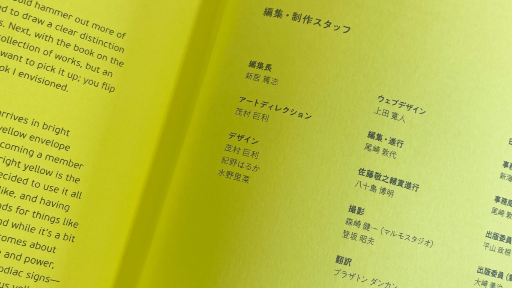

日本タイポグラフィ年鑑2022
レイアウト・デザインの編集
Book Editing
Layout Design
Typograph
日本タイポグラフィ年鑑2021の編集作業のお手伝いとして
アートディレクターの茂村さんにご教授いただきながら主にレイアウト作業を行いました。
実際にプロとしてご活躍されている茂村さんから、本の作り方や編集作業のノウハウ、作業工程などを間近に触れる機会をいただき、
加えて、デザインやタイポグラフィの奥深さなどのお話を伺うことができました。
本のクレジットに、自分の名前が乗っていることに感動しました。
大変濃い貴重な体験をさせていただきました。
使用ソフト：InDesign
制作期間：４ヶ月